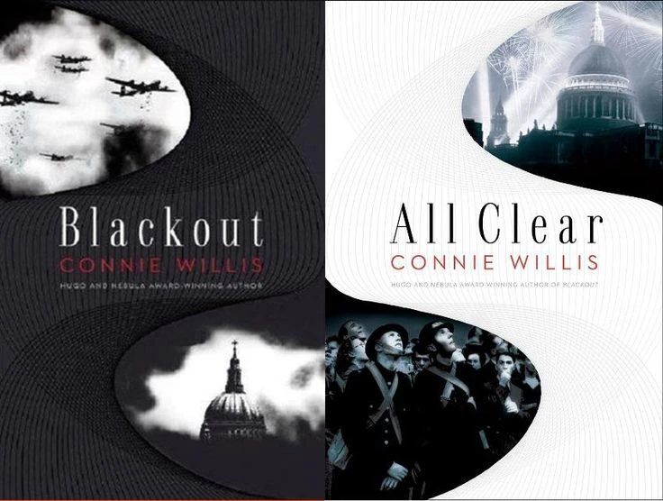

Blackout / All Clear

by Connie Willis, 2010
Blackout and All Clear are two novels, planned as one, but which grew out of control. They form the latest and most ambitious entry in the delightful Oxford Time Travel Series, in which Oxford University historians of 2060 perform routine observational field work in the distant past, often for weeks or months at a time.
I've positively loved several of these. The initial novella Fire Watch touchingly depicts a historian joining the watch that prevented the destruction of St Paul's Cathedral during WWII. Doomsday Book is by turns droll and tragic, telling of a young historian enduring the horrors of the black plague in the Middle Ages.
This was followed by To Say Nothing of the Dog, which follows a slightly different cast of time-travelling Oxford historians sent to an English aristocratic household in the 1890s. There, the necessity of hiding their true identities and intentions compounds the many other confusions in a comedy of manners, as a need to restore a historical object to its proper place and time, at the risk of destroying the entire continuum, is complicated by hastily improvised plans, a severe case of time-lag, overbearing matriarchs, mistaken identities, missing cats, crossed marital hopes, boating parties, and a Jeeves-like ferociously competent manservant.
Indeed, the whole thing is strikingly similar to a P. G. Wodehouse novel, and I don't say that lightly, as I think he's one of the best comedy writers ever, and this homage is entirely worthy of the comparison.
Finally, we come to Blackout, which by comparison is is a bit of a relentless downer, as historians scattered about the period of WWII sink into despair as they get trapped in the past, cut off from each other, unable to return to their future university, and slowly come to accept that not only will they have to live through the difficult and dangerous war years, and very well might never be able to return home, and further, might in fact have accidentally caused changes in the past which mean the future they came from no longer exists, and possibly even is overwritten by a catastrophic timeline in which Hitler's forces were globally victorious.
I did find it frustrating that on many different occasions the plot is driven by characters withholding information from each other, often motivated by wanting to save each other the worry of bad news. In a comedic setting like To Say Nothing of the Dog, this sort of thing only adds to the farce. But in the life-or-death precarity of Blackout, I found this to be immensely frustrating and contrived, and it happens over and over again.
Another of Willis' books that does this a lot is Passage, which isn't part of the Oxford time-travel series. I really did love it, although it absolutely has a lot of the same style of contrived mechanisms, whereby characters simply cannot bring themselves to perform this absolutely vital action because if they head in that direction, they might bump into that other character who they really dislike and who talks your ear off. But it redeemed itself with a bold and creative take on psychological events that occur during the process of brain death, which I really enjoyed a lot.
To be honest, I only stuck with Blackout because I expected that All Clear would, as the title suggests, reverse course and pay off all this dramatic build-up with uplifting, triumphant resolutions. But it was actually just much more of the same. Even the character's final escape from their predicament is interwoven with terrible sacrifice and loss.
I guess that's what a book about living through The Blitz is bound to entail. And everyone else loves it. It has a Hugo and Nebula and everything, so my own flagging enthusiasm is doubtless entirely my own failing.